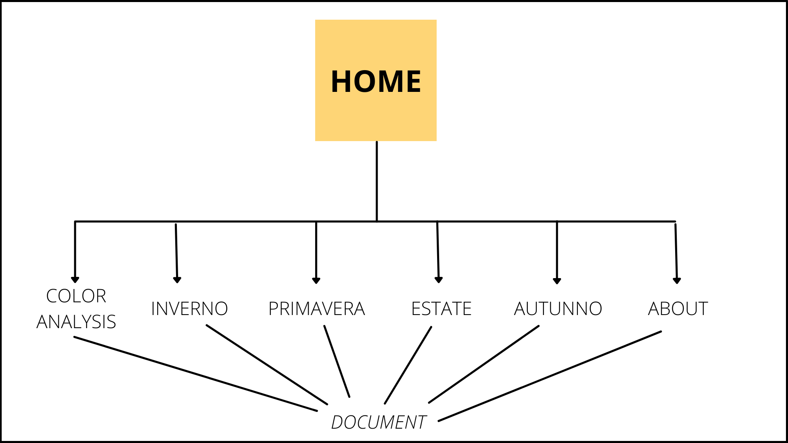
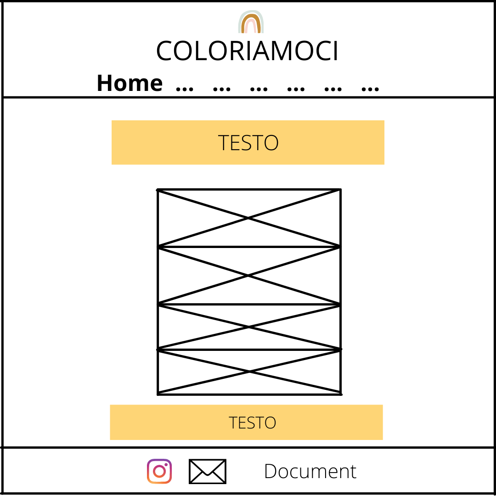
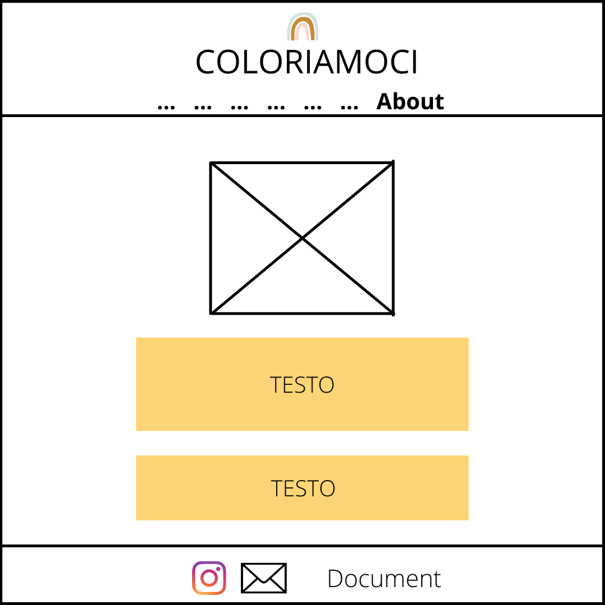
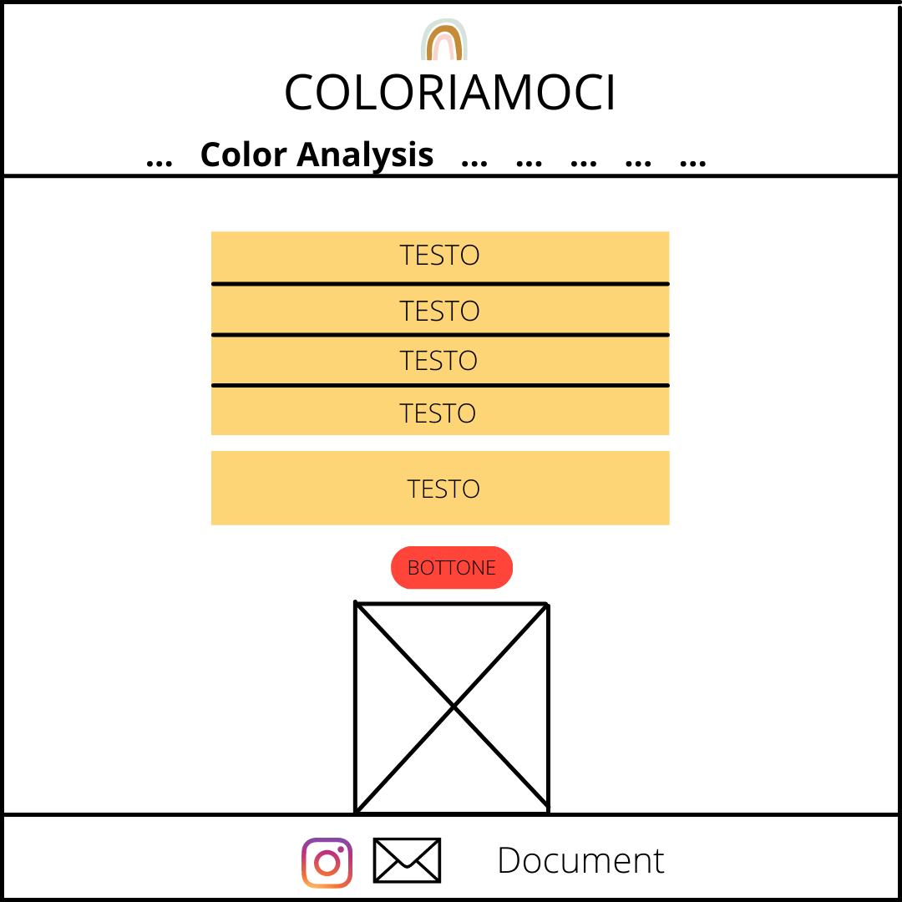
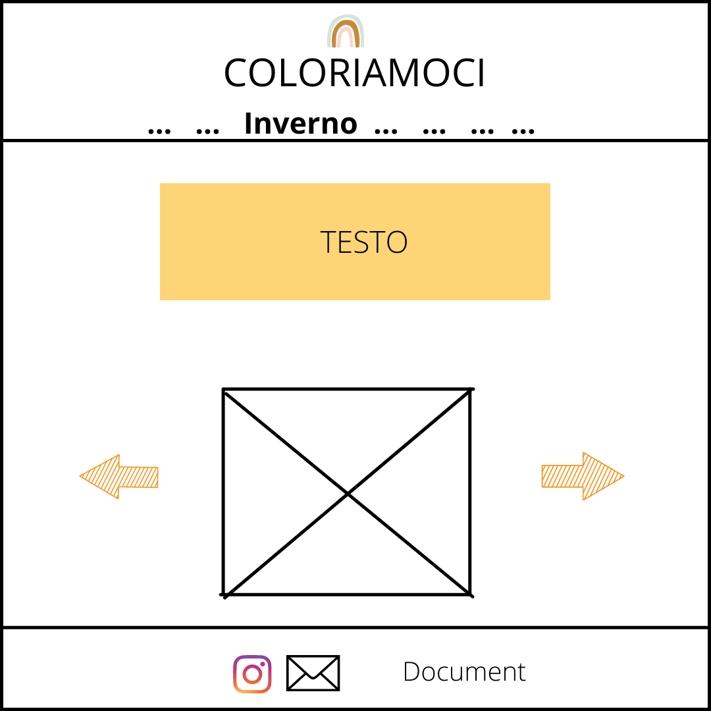
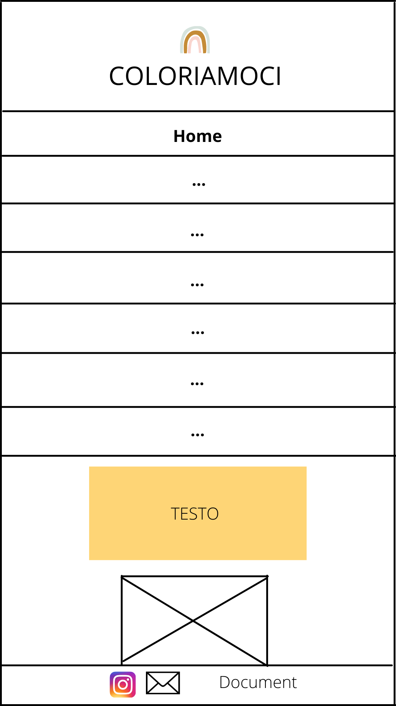
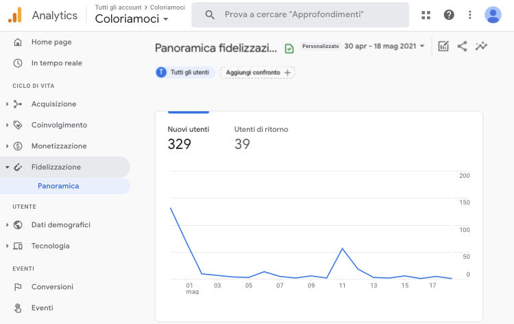
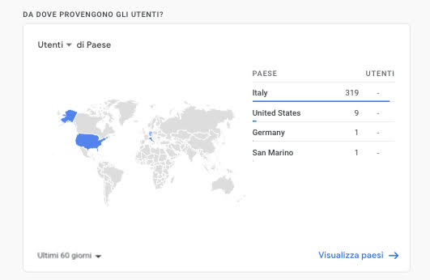
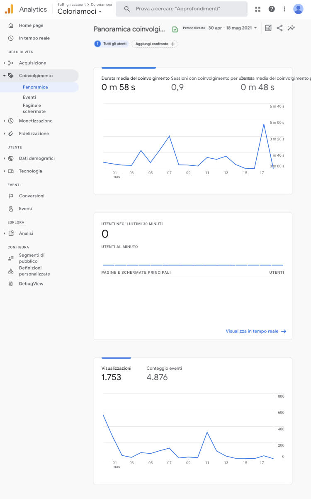
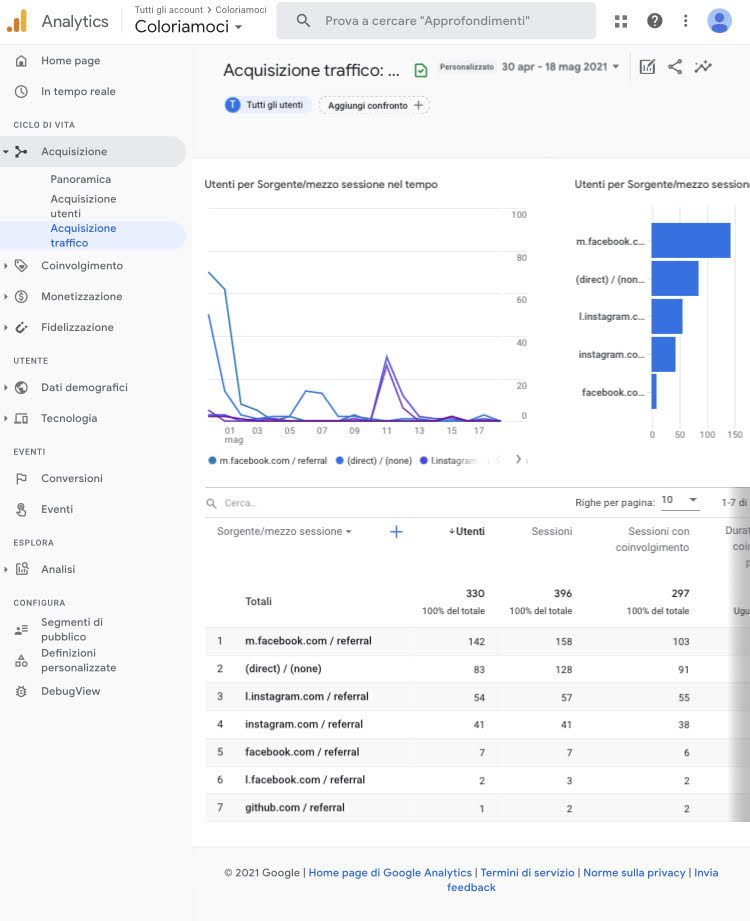

COLORIAMOCI si rivolge a tutte quelle persone che, come me, credono che i giusti colori non solo donino armonia cromatica, ma esaltino al contempo la propria bellezza naturale.
Il valore aggiunto del sito è la semplicità delle informazioni diffuse: mentre i leaders competitors si esprimono con un linguaggio tecnico dai toni più complessi, COLORIAMOCI divulga i concetti fondamentali in maniera più semplice rendendoli accessibili a un pubblico maggiore.
Obbiettivi
COLORIAMOCI ha l'obbiettivo di semplificare la Color Analysis, permettendo agli utenti di svolgerla in piena autonomia.
Target
Il target utente primario si rifà a chi vuole approcciarsi per la prima volta a questa disciplina.
Competitors
I principali competitors sono RM-style e Al Femminile. Il provider del primo sito è Rossella Migliaccio: colei che attraverso il libro “Armocromia. Il metodo dei colori amici che rivoluzionano la vita e non solo l’immagine” ha reso l’argomento noto in Italia. Al Femminile, invece, appartiene ad un gruppo francese: il provider, in questo caso, è un’impresa. Entrambi i siti comunicano informazioni specifiche, attraverso un linguaggio tecnico. Pertanto, il parametro tematico è decisamente soddisfacente in RM-style. In Al Femminile mancano alcuni elementi: non vi è una mail e nemmeno una pagina in cui il provier si racconta (es: About). Il parametro tematico quindi è insufficiente. In entrambi i siti l'usabilità non è ottimale perché la numerosità degli articoli fa perdere di vista i concetti indispensabili e si può tradurre come una bassa piacevolezza alla navigazione. Inoltre, il sito del gruppo francese propone per lo più foto prese da Pinterest e il logo rosso del social sopra ciascuna di esse è disturbante per la user experience.
Architettura del sito

Wireframe




I seguenti wireframes sono pensati per la rappresentazione su pc.

Il seguente wireframe è pensato per schermi di dimensioni più ridotte: come uno smartphone o un tablet.
Look and Feel
Il font Poppins (sans-serif) è semplice ma al contempo elegante. Il suo design pulito permette al lettore di percepire le informazioni in modo chiaro.
Per facilitare la lettura la componente testuale è al centro della pagina: l'utente riesce con uno sguardo a concentrarsi sull'intero testo, facendo a meno di staccare gli occhi dallo schermo.
La palette colori si rifà a tre tonalità principali: il rosso (indianred, maroon) simboleggia l'amore, in questo caso per sè che COLORIAMOCI cerca di far riscoprire a chi visita il sito; il bianco indica una rinascita personale dell'individuo; il rosa (lightsalmon, rose white) si rifà a una dimesione principalmente femminile come il target utente primario di riferimento del sito. I colori scelti abbracciano la mia palette cromatica, l'Autunno, dal momento che il progetto è la condivisione di una passione personale.
Linguaggi
HTML
CSS
JAVASCRIPT
Strumenti
Canva per i wireframes
Rgb per la palette colori
Google Fonts per i fonts
Font Awesome per le icone
Unsplash per le immagini
Favicon.cc per il favicon
Bootstap come libreria
Github per pubblicare il sito online
Instagram e WhatsApp per la promozione
Google Analytics per la valutazione
COLORIAMOCI, che si rifà al settore della moda, a differenza dei suoi competitors, affronta la Color Analysis in maniera più semplice. Con un linguaggio immediato, eppure ugualmente efficace, vengono veicolate nozioni specifiche ma comprensibili anche da chi non si è mai rapportato prima all'Armocromia. Per facilitare la comprensione dei concetti usa numerose immagini e frasi brevi.
Non vi è alcun occultamento per quanto riguarda il provider: mi mostro in prima persona sia per garantire la veridicità dei contenuti, che per trasmettere la mia passione ai visitatori del sito. L’empatia aggiunge al progetto soggettività, sdoganandolo dalla mera informazione, ma attribuendogli una forte dimensione personale, un vero e prioprio emotional journey per l'utente.
L’obbiettivo principale è quello di fornire indicazioni puntuali per permettere agli utenti di riconoscersi nella propria stagione della Color Analysis. Attraverso quest’ultima, COLORIAMOCI vuole aiutare più persone a risaltarsi, ma soprattutto amarsi maggiormente. Pertanto, l’obbiettivo secondario è acquisire fiducia e consapevolezza su di sé.
I target audience individuati sono:
donne dai 18 ai 50 anni: target utente primario
Sono coloro che reputo maggiormente interessate all’argomento e, in particolare, alla sua attuazione nel pratico.
donne over 50 e uomini di tutte le età: target utente secondario
Il messaggio è principalemente di carattere divulgativo: vengono comunicati concetti basilari per assorbire e rendere propria una materia non particolarmente facile. Una barriera è sicuramente il carattere innovativo dell’argomento stesso, il quale può essere percepito come un trend passeggero. Attraverso COLORIAMOCI mi impegnerò a creare un legame duraturo con gli utenti, in modo tale da far emergere un forte engagement, anche attraverso le piattaforme social.
Per promuovere il sito la scelta è ricaduta su Instagram e WhatsApp. Attraverso il primo social mi sto facendo conoscere ad un pubblico sempre più ampio, mentre con il secondo sto creando una fitta rete di contatti che possono garantire possibili visite al sito. Con il passaparola sto raggiungendo persone più vicine a me le quali non dispongono dei social media.
La valutazione consiste in almeno 50 visite da utenti unici. Essa viene misurata con l’ausilio di Google Analytics.
Di seguito sono riportati i risulati dopo le prime tre settimane dalla pubblicazione del sito online:




Armocromia. Il metodo dei colori amici che rivoluziona la vita e non solo l'immagine di Rossella Migliaccio.